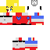

<h1>QSKSw Minecraft Skins</h1>

<a class="thumbnail">
<span>MS Paint (Nostalgia)</font><iframe style="border:1px solid #000;background:#00FFFF" width="300px" height="300px" src="./inventivetalent/embed.html?skin=http%3A%2F%2Fqsksw.github.io%2Fminecraft%2Fskins%2F00-Nostalgia-Unmasked.png&camera.position=10,20,25&partToggle.hat=false" frameborder="0" class="skinContainer center" id="iframeExample"></iframe><br>
An interpretation of my original skin. It wasn't very good.</span></a>

<link rel="shortcut icon" type="image/x-icon" href="../../favicon.ico">
<link rel="stylesheet" href="../../stylesheet.css">

<a href="../../stylesheet.css">the one</a>